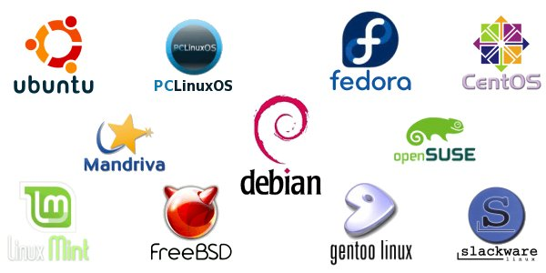

As researchers, we try to understand nature using scientific methods and come up with new interpretations. Our interpretations become meaningless unless we make it available to the rest of the world. An important question here is in what manner we convey our interpretations. In general, the process is done through scientific publications. That is, our idea is written into a document (either in paper or in electronic form). For the same, significant effort is required to filter out the required contents (text, analysis, figures, tables, and references) that need to be included in the document and to organize them in a meaningful way. In this article, I discuss six efficient free and open source software (FOSS) tools which provide the environment to make our work ready for publishing.
The use of computing systems and the availability of different document creation tools help us to write our documents with minimum effort. GNU/Linux is an operating system (OS) for our computer machines which is freely (not in terms of cost) available. Unlike Microsoft Windows and Apple's Mac OS, GNU/Linux is developed with the philosophy of Free Software, i.e., knowledge is the wealth of entire society, not a private property (For more information about Free Software, read Free Software Foundation, Richard Stallman, and GNU General Public License).
|  |
| Fig. 1: Linux flavours ☈ |
GNU/Linux offers several benefits such as user friendliness, free of viruses, stability, security, free updates, and the rights provided as a free software. At present, Linux distributions with different flavours are available which can be downloaded from internet at no cost. Examples include Ubuntu, Fedora, Debian, Arch, etc. Different flavours of Linux distributions and their updated versions are available at www.distrowatch.com.
Ubuntu and Fedora are popular due to its wide acceptance and support forums. The Linux distributions are available as Live CDs such that you can try them using a CD or a USB storage, i.e., without actually installing the OS. User friendly graphical user interface allows the user to install them to the machine (alone or along with other operating systems). Since research requires a platform with stable software (for nearly 4-5 years), Linux will be the best option in terms of technology as well as philosophy. You can find installation steps for several Linux distributions in the following links: (a) Ubuntu and (b) Fedora.
Since we all are computer users, we cannot avoid typing. However, we may not be aware of how much time we are unnecessarily spending due to the inefficient movement of our fingers and hands on the keyboard. Significant amount of time can be saved if we avoid the hand movements and concentrate only on the finger movements to type the letters. An easy way to achieve the same is to learn typing. Several software as well as online tools are available to self-learn typing. For the sake of this article, I suggest a tool GNU Typist, a free software, to learn typing. GNU Typist is a command line typing tutor which can be easily installed from the software center in Linux or using the following command in terminal.
$ sudo apt-get install gtypist
In order to run GNU Typist, run the command in the terminal as follows:
$ gtypist
You can see the instructions for continuing with the course. The course is divided into basic lessons of typing with a set of letters per each lesson. Also, upon completion of each exercise, you will get your performance in terms of different metrics, so that you can repeat the exercise to achieve the required performance.
It requires lot of patience at the initial stages of learning (Only for first 3-4 days). You may feel a little bit of pain in your fingers or lack of interest, which may force you to go back to your previous typing style, which is strictly not recommended. After 4-5 days, the lack of interest will turn to more interest and the urge to type will increase as days go on. At the end, you can measure your typing speed using the metrics such as words per minute (WPM) and typing accuracy. It will be sufficient that if you can achieve 60 WPM or above.
 GNU Emacs is a free editor using which we can do,
whatever we want to do with a computer. You may not believe my first
statement. It is better to experience it. In simple words, the Emacs
text editor can be controlled using keyboard alone, with short-cuts,
especially the Ctrl and Alt keys. We can move to any
position of your document without using the dedicated direction keys
such as arrow keys, Home, PgUp, PgDn and End. We do not need to change
the hand-position that we learned from GNU Typist. That is, only the
finger movements are sufficient to control the entire environment.
GNU Emacs is a free editor using which we can do,
whatever we want to do with a computer. You may not believe my first
statement. It is better to experience it. In simple words, the Emacs
text editor can be controlled using keyboard alone, with short-cuts,
especially the Ctrl and Alt keys. We can move to any
position of your document without using the dedicated direction keys
such as arrow keys, Home, PgUp, PgDn and End. We do not need to change
the hand-position that we learned from GNU Typist. That is, only the
finger movements are sufficient to control the entire environment.
Apart from a simple editor, Emacs provides support to the specific environment that we are working with. For example, it provides python-mode for Python programmers to make the coding easier with features such as auto-completion and auto-indentation. For LaTeX users, Emacs provides AUCTeX with shortcuts for LaTeX environment. Even, we can customize the environment for our requirements. In order to install Emacs, run the following command in the terminal.
$ sudo apt-get install emacs24
Emacs can be run either with a graphical user interface (GUI) or in
terminal. You can use the following commands to run Emacs. For
GUI mode
$ emacs
For terminal mode
$ emacs -nw
Similar to GNU Typist, upon opening Emacs, you can see the instruction set to start with. By pressing Ctrl-h t, you will be redirected to an Emacs tutorial where you can read and practice at the same place. Be cautious that you will be irritated with the shortcuts at the beginning, similar to the beginning stage of typing. Spend a few days with Emacs by ignoring such distractions. One important point to note, regarding both typing as well as Emacs, is that your fingers will learn these two tools rather than your conscious mind. After learning, you may not able to answer where the position of a particular key in the keyboard is or what is the shortcut for a particular activity in Emacs. However, your fingers will do it perfectly without the involvement of your conscious mind. Here, reality comes as the biggest joke.
 LaTeX is an extreme-quality document creation tool
originally developed by Leslie Lamport. LaTeX makes use of
the TeX type setting
system primarily developed by Donald E. Knuth. The word Documents
includes reports, figures, and presentation slides. While creating
documents in conventional tools such as Microsoft Office, OpenOffice,
or LibreOffice, you can feel that major part of your time is consumed
on the alignment, orientation, or the placement of document content
instead of the content, which is the important part. LaTeX solves this
problem by automating the style related issues and makes the user to
concentrate only on the content. We need to write the content with
respective command or environment to make this work. However, the
learning time of basic commands, even though you may find it difficult
at the initial stage, is not at all comparable with the quality that
you get from the documents. A tutorial for beginners from the TeX
Users Group (TUG) can be downloaded
from here. As mentioned in the previous section, Emacs
provides the LaTeX environment to edit documents using AUCTeX
package. (For a very simple tutorial visit: An
Experience with LaTeX).
LaTeX is an extreme-quality document creation tool
originally developed by Leslie Lamport. LaTeX makes use of
the TeX type setting
system primarily developed by Donald E. Knuth. The word Documents
includes reports, figures, and presentation slides. While creating
documents in conventional tools such as Microsoft Office, OpenOffice,
or LibreOffice, you can feel that major part of your time is consumed
on the alignment, orientation, or the placement of document content
instead of the content, which is the important part. LaTeX solves this
problem by automating the style related issues and makes the user to
concentrate only on the content. We need to write the content with
respective command or environment to make this work. However, the
learning time of basic commands, even though you may find it difficult
at the initial stage, is not at all comparable with the quality that
you get from the documents. A tutorial for beginners from the TeX
Users Group (TUG) can be downloaded
from here. As mentioned in the previous section, Emacs
provides the LaTeX environment to edit documents using AUCTeX
package. (For a very simple tutorial visit: An
Experience with LaTeX).
Apart from articles, letters, reports, books, or scientific papers, LaTeX is used to create presentation slides with the help of a class called Beamer. The slides are created using the frame environment. The beamer class is originally developed by Till Tantau and currently maintained by Joseph Wright and Vedran Miletić. Beamer themes are usually named using place names (such as Copenhagen, Berkeley, Frankfurt, and Warsaw) and you can define your own theme if required (See beamer theme matrix). A user guide for beamer can be downloaded from here.
In addition to technical papers and presentation slides, posters are important method to convey our ideas and results. LaTeX allows us to create high quality posters with appropriate dimension. If we are comfortable TikZ drawing, we can create custom posters of required size. Free LaTeX templates for posters are available at the following links: (i)Link-1, (ii) Link-2, and (iii) Link-3.
One of the major addition to the TeX system is the graphics package named TikZ. It includes macros for writing mathematical descriptions of an image, using which the PDF can be produced with the LaTeX engine. Major part of the TikZ library is developed by Till Tantau and the remaining development is done by Christian Feuersaenger. Drawing in TikZ becomes easier if we have the cartesian coordinate system in mind while writing the image description. It may take a few days, similar to typing or Emacs, to get familiarized with the drawing commands. However, the quality of the figure is incomparable with the images produced using other tools. You can see the magic of TikZ in www.texample.net. Nowadays, the drawing tools generate the TeX code corresponding to our figure allow us to save the drawings as a .tex file (instead of image formats such as .png, .jpg, or .eps), so that we can create the figure using LaTeX. An introduction for drawing using TikZ is available here.
 Python is
an open source interpreted programming language which provides a
platform to express our ideas in mind with minimum effort. As
Jack Jenson says,
“Python is a truly wonderful language. When somebody comes
up with a good idea it takes about 1 minute and five lines to program
something that almost does what you want. Then it takes only an hour
to extend the script to 300 lines, after which it still does almost
what you want.” Python was developed by a Dutch
programmer, Guido van
Rossum. We can learn the language within hours (this phrase is
not an exaggeration), and start writing our codes easily. Since Python
is easy to learn, it became the top introductory programming language
at the U.S. universities ☈. From my perspective, if you have written 1+2 for adding
the numbers 1 and 2 (either in paper or in calculator), you are
already a Python programmer, because 1+2 is the python code to add the
numbers 1 and 2. Unlike other popular languages such as C, C++, or
Java, Python is free from punctuation marks (such as
semi-colons and braces) and language constructs, which usually make students afraid of
learning language and, thereby, discouraging them to write
code. On the other hand, Python insists proper indentations (spaces at the
beginning) for code blocks to make the code more organized and
readable to keep up with the design philosophy of Python. Two of the most popular
versions Python are Python 2.7 and 3.0.
Python is
an open source interpreted programming language which provides a
platform to express our ideas in mind with minimum effort. As
Jack Jenson says,
“Python is a truly wonderful language. When somebody comes
up with a good idea it takes about 1 minute and five lines to program
something that almost does what you want. Then it takes only an hour
to extend the script to 300 lines, after which it still does almost
what you want.” Python was developed by a Dutch
programmer, Guido van
Rossum. We can learn the language within hours (this phrase is
not an exaggeration), and start writing our codes easily. Since Python
is easy to learn, it became the top introductory programming language
at the U.S. universities ☈. From my perspective, if you have written 1+2 for adding
the numbers 1 and 2 (either in paper or in calculator), you are
already a Python programmer, because 1+2 is the python code to add the
numbers 1 and 2. Unlike other popular languages such as C, C++, or
Java, Python is free from punctuation marks (such as
semi-colons and braces) and language constructs, which usually make students afraid of
learning language and, thereby, discouraging them to write
code. On the other hand, Python insists proper indentations (spaces at the
beginning) for code blocks to make the code more organized and
readable to keep up with the design philosophy of Python. Two of the most popular
versions Python are Python 2.7 and 3.0.
Python supports variety of programming paradigms such as functional programming, object oriented programming (popularly known as OOP), aspect oriented programming, and structured programming. The wide acceptance of Python resulted in the development of code libraries for a variety of computing operations. Some of them include SciPy (for science and engineering), NumPy (numerical analysis), matplotlib (graph plotting), PyOpenGL (high performance graphics), SymPy (symobolic mathematics), NetworkX, igraph (graph theory and network analysis), pygame (games and art), scikit-learn, mlpy (machine learning), and pandas (data analysis). You can write Python code in any basic text editor and save as a .py file and execute using a command line interpreter. In addition, there exist several dedicated development environments, which include Integrated Development and Learning Environment (IDLE), PyMacs (Emacs extension for Python), DrPython, and IPython.
Similar to libraries, Python is rich in terms of learning resources as well. One of the best slides from Rossum is available from here, using which you can learn the language within a couple of hours. Other useful materials include (i) Dive into Python, (ii) A Byte of Python, (iii) How to Think Like a Computer Scientist: Learning with Python, (iv) Python Essential Reference: Developer's Library and (v) Learn Python: Tutorials Point.
Note: If you are comfortable with MATLAB, free and open source software alternatives are available with similar syntax and features as that of MATLAB. Two of the most important tools are (i) Scilab and (ii) GNU Octave.
Gnuplot is a 2D and 3D plotting tool for graphical visualization of data. It uses a command line interpreter to execute the commands for plotting. Gnuplot is easy to learn and is integrated with basic programming constructs (such as loops and conditional statements) to manage complex data patterns. It supports a variety of image formats such as jpeg, png, eps, svg, fig, gif, and LaTeX. If you are familiar with LaTeX, I recommend to use the LaTeX output such that the figure can be created using TikZ with extreme quality (See my post: Gnuplot + LaTeX: The Ultimate Plotting Experience).
It is easy to learn gnuplot from examples rather than from textbooks. A detailed library of different types of plots are available in gnuplot demos. Some of the materials to learn gnuplot include (i) gnuplot 4.6: An Interactive Plotting Program, (ii) Gnuplot in Action: Understanding Data with Graphs, and (iii) gnuplot Quick Reference.
I consider the tools discussed above are highly efficient in terms of time, effort, and quality. Even though it takes a little time to learn the tools (only a matter of 1 or 2 weeks), the tools will surely remain as an asset for the remaining of our life.
------------------------------------
Thanks for Deepak Gopalakrishnan for suggestions. If you find
any mistakes or you have any suggestions, please send me a mail.